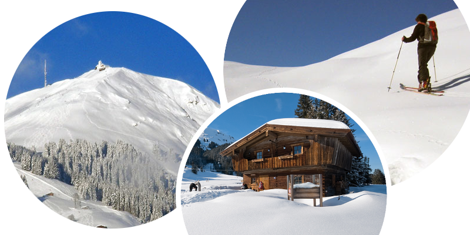

Free Wifi
Parkplatz
Küche
Sat TV
Die beiden Appartements sind gemütlich eingerichtet und verfügen über einen großen sonnigen Balkon mit herrlicher Aussicht. Außerdem haben wir für Sie eine Spiel- und Leseecke, einen Tischtennistisch und zwei Gratisfahrräder. Im Winter hält eine Schischuhheizung im Skikeller Ihre Schuhe warm und trocken. Jetzt Neu! steht eine Infrarotkabine zu Ihrer freien Verfügung Wir bestellen gerne Ihre Frühstücksbrötchen.
Unser Haus liegt auf einer Anhöhe auf der Sonnenseite von Brixen im Thale. Wir liegen etwas oberhalb der Gondelbahnstation und im Winter nahe der Talabfahrt. Das Ortszentrum ist ca. 6 Gehminuten entfernt und der Supermarkt ist in ca. 3 Gehminuten erreichbar. Im Sommer ist unser Haus Ausgangspunkt zahlreicher Wanderungen und auch der Badesee mit Freischwimmbadanlage ist in ca. 10 Gehminuten zu erreichen. Sie können in Ruhe entspannen und die Natur genießen und doch erreichen Sie alle wichtigen Ziele in Kürze. Im Haus Rosenegg können Sie somit einen genussvollen und erholsamen Urlaub abseits von Stress und Hektik verbringen. Finden Sie in Brixen im Thale Ihr Appartement bei Haus Rosenegg.
Appartement Rose
Das Apparement ist für 2-4 Personen geeignet. Bei Bedarf kann das Appartement auch mit einem Wohnschlafzimmer kombiniert werden, um Platz für bis zu 7 Personen zu schaffen.
Doppelbett Couch Sat TV Tischgarnitur sonniger Balkon E-Herd Backrohr Kaffeemaschine Toaster Kühlschrank ausreichend Geschirr Sitzecke
Ausstattung:
Preisliste - Appartement Rose (Pro Übernachtung)
| Sommer | Winter HS | Winter NS | |
|---|---|---|---|
| Bei 4 Personenbelegung | ab 72 € | ab 112 € | ab 100 € |
| Bei 5 Personenbelegung | ab 85 € | ab 134 € | ab 120 € |
| Bei 6 Personenbelegung | ab 102 € | ab 158 € | ab 140 € |
Kinderermäßigung bis zu 2 Jahren 50%, bis zu 12 Jahren 20%
Preise sind ohne Ortstaxe und auf einen Aufenthalt von einer Woche ausgelegt.
Appartement Brixen
Das Apparement ist für 4-6 Personen geeignet.
Doppelbett Sat TV Sitzplatz sonniger Balkon E-Herd Mikrowelle Kaffeemaschine Toaster Kühlschrank ausreichend Geschirr kleine Sitzecke
Ausstattung:
Preisliste - Appartement Brixen (Pro Übernachtung)
| Sommer | Winter HS | Winter NS | |
|---|---|---|---|
| Bei 2 Personenbelegung | ab 44 € | ab 64 € | ab 62 € |
| Bei 3 Personenbelegung | ab 57 € | ab 90 € | ab 81 € |
| Bei 4 Personenbelegung | ab 68 € | ab 112 € | ab 100 € |
Kinderermäßigung bis zu 2 Jahren 50%, bis zu 12 Jahren 20%
Preise sind ohne Ortstaxe und auf einen Aufenthalt von einer Woche ausgelegt.
Region - Brixen im Thale
Brixen im Thale liegt im Zentrum des Brixentals und der Kitzbüheler Alpen, ca. 10 min. von Kitzbüheler und 20 min. von der Autobahnausfahrt in Wörgl entfern. Das örtliche Skigebiet "SkiWelt Wilder Kaiser-Brixental" entwickelte sich zu einem der modernsten, attraktivsten Österreichs - 90 Lifte mit 270 km Pistenkilometer warten darauf erobert zu werden. Zusätzlich finden Brixens Wintergäste ein weitläufiges Loipennetz, eine der größten und wunderschöne Höhenloipe direkt im Skigebiet, romantische Winterwanderwege und eine Naturrodelbahn.
Eine vielseitig nutzbare Freizeitanlage mit einem Erlebnis- und Sportschwimmbad, einem romantischen Badesee, Tennisplätzen, einem Fußballplatz, einem Beachvolleyballplatz, integrierter Kneippanlage sowie ein idyllischer Angelteich, direkt im Anschluss der Freizeitanlage, sorgen im Ortszentrum für Abwechslung in der Freizeitgestaltung. All das wäre allerdings nichts, gäbe es nicht diese wunderbare Bergkulisse der Kitzbüheler Alpen, in der sich Brixen harmonisch einbettet und die durch ein weiläufig angelegtes Netz an Wanderwegen, Radwegen, Mountainbikerouten und Seilbahnen erlebbar wird.

Kontakt
Haus Rosenegg - Ursula NageleUnterer Sonnberg 49, 6364 Brixen im Thale
e-Mail: nagele@aon.at
Tel. +43 5334 8527